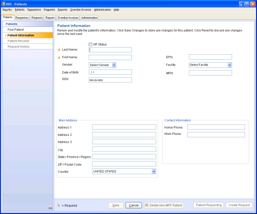

)
) )
)The Patient Information form enables you to:
To open the form
OR
Search for and select a patient. Then click View/Edit Patient.
Note: You can access this form at any time while viewing and/or editing patient information.

Item descriptions
VIP Status
Indicates whether a non-OneContent patient has VIP status and restricts access to this patient's records.
The VIP status is given to patients who have requested that access to their records be restricted. Only users who have the ROI VIP Status permission can view non-OneContent VIP patients. For users who do not have VIP permission, the system displays an alert at the request level that the user cannot access the request due to VIP restrictions.
Rules are:
Last Name and First Name
The patient's name.
Can be edited only for non-OneContent patients and only if you have required permissions.
))Gender
The patient's gender.
Enabled only for non-OneContent patients and only if you have required permissions. Otherwise, is display-only.
Defaults to Select Gender for new non-OneContent patient.
Options are:
Date of Birth
A patient's date of birth.
Enabled only for non-OneContent patients and only if you have required permissions.
If you are creating a new patient, allows you to enter Month, Day, and Year values.
SSN
All or part (beginning with the first character) of the patient's Social Security Number.
EPN
Enterprise Person Number. EPN is an identifier created by an Enterprise Master Person Index (EMPI) system to uniquely identify a person across all enterprise systems and facilities
Displays only for EPN systems. Optionally displays the configured EPN prefix, depending on your election (default setting is no prefix).
Enabled only for non-OneContent patients and only if you have required permissions.
Facility
The facility where patient care occurred.
Editing enabled only for non-OneContent patients and only if you have required permissions.
MRN
Medical Record Number.
Combines with the Facility value to render a unique patient identifier.
Enabled only for non-OneContent patients and only if you have required permissions.
Main Address group box
The patient's address. Contains up to three address lines, city, state/province/region, zip/postal code, and country information. (Click the drop-down list to override the default country.)
Always read-only for OneContent patients.
Enabled only for non-OneContent patients and only if you have ROI Create Request or ROI Modify Request permissions; fields default to blank.
Contact Information group box
Patient's contact information. Contains fields for home and work phone numbers.
Information is always display-only for OneContent patients.
Fields become enabled only for non-OneContent patients and only if you have Create Request permissions.
Save
Saves changes to the patient's information.
Enabled only for non-OneContent patients and only when the Name field contains a value and unsaved data exists.
Cancel
Displays only for a new non-OneContent patient. Never displays for an OneContent patient.
Cancels the create patient action and returns you to the Find Patients form.
Revert
Reverts all information on the Patient Information form to the last saved state.
Displays only for an existing patient.
Enabled only after you edit information for a non-OneContent patient. Remains disabled for an OneContent patient.
Delete Non-MPF Patient
Deletes the currently selected non-OneContent patient from the database.
Displays only for a non-OneContent patient and only if the patient is not currently included on a request.
Launches a confirmation prompt.
Patient Requesting
Allows you to create a new request for the selected patient, with the patient as the requestor.
Displays only if you have ROI Create Request permissions.
Create Request
Allows you to create a new request for the selected patient.
Displays only if you have ROI Create Request permissions.